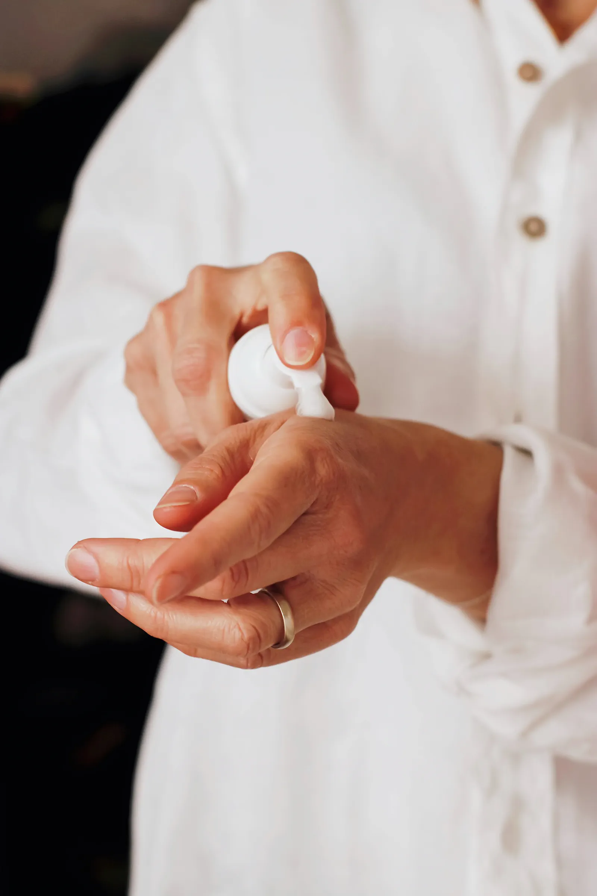
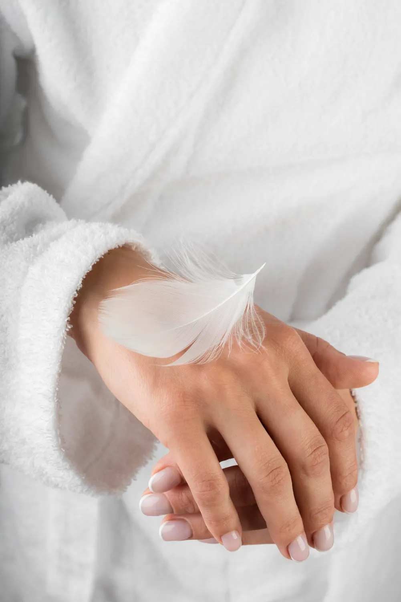

Terre Sereine vous accueille à Woippy, aux portes de Metz, dans un lieu intimiste dédié au soin de la peau et au bien-être du corps. Que ce soit pour un premier rendez-vous ou pour prolonger votre expérience, chaque visite est pensée comme un moment privilégié — où l’on prend le temps de vous écouter, de comprendre vos besoins et d’agir en profondeur. Franchir la porte de Terre Sereine, c’est s’offrir bien plus qu’un soin : une sensation de légèreté, un corps apaisé, une peau révélée.

Terre Sereine est une maison de soins et de bien être à Woippy, aux portes de Metz, dédiée à une approche experte et sensorielle du bien-être. Chaque soin est conçu pour libérer les tensions du corps et révéler l’éclat de la peau, grâce à des protocoles précis et des marques d’exception comme Dermalogica et BIOSLIMMING
Nous avons bâti cette maison autour d'une idée simple : prendre soin de soi n'est pas un luxe, c'est un retour. Un retour à la matière, au souffle, à la lenteur. Chaque rituel — soin du visage, massage, drainage — est pensé pour rééquilibrer le corps et l'esprit.
Nous travaillons avec trois marques d'exception — Dermalogica et House of Peau pour le visage, Bioslimming pour le corps — et des techniques sensorielles : maderothérapie, pierres chaudes, drainage lymphatique, sauna dôme infrarouge.

Dix rituels, dix manières de retrouver son équilibre. Chaque soin du visage, massage ou rituel corps est personnalisé, prolongé par un moment de thé et de silence.

Lavage en profondeur, massage crânien, vapeur d'eau thermale. Un soin japonais qui relâche les tensions et réveille la brillance des cheveux.
Découvrir le rituel
Le soin nouvelle génération pour une peau parfaite. Un teint frais, lumineux et éclatant dès la première séance, sans éviction sociale.
Découvrir le rituel
Des micro-pointes très fines stimulent la peau en douceur. Effet « peau neuve » sans douleur, pour un éclat retrouvé tout en respect.
Découvrir le rituel
Diagnostic personnalisé avant chaque séance. Soin Signature 30 min ou 1 h, soins ciblés Pro Bright, Calm, Clear, Firm.
Découvrir le rituel
Cinq protocoles signés House of Peau : Lift Elixir, Hydra Boost, Acné Solution, Sébum Control, Sensitive Skin.
Découvrir le rituel
Sculpture corporelle aux outils de bois. Technique colombienne pour remodeler, raffermir et redessiner la silhouette.
Découvrir le rituel
Enveloppement thermo-actif. Stimule la circulation, draine et lisse la silhouette en profondeur, séance après séance.
Découvrir le rituel
Mouvements doux et précis pour relancer la circulation. Légèreté retrouvée, silhouette affinée.
Découvrir le rituel
Le dôme infrarouge enveloppe le corps sans chauffer la tête. Détoxification profonde, sommeil réparateur.
Découvrir le rituel
Basaltes volcaniques chauffés, glissés le long des méridiens. Un voyage de relaxation profonde.
Découvrir le rituelRéférence mondiale en soins de la peau, reconnue pour son approche personnalisée et ses résultats visibles. Des formules actives, propres, cliniquement testées, adaptées à chaque type de peau.
La technologie italienne qui a redéfini le soin corps. Un bandage actif thermo-froid aux actifs végétaux puissants pour raffermir, drainer et affiner la silhouette en profondeur.
Une approche moderne et holistique du soin de la peau. Des protocoles innovants, alliant techniques avancées et gestuelles précises, pour une expérience sur-mesure entre performance et lâcher-prise.

Terre Sereine vous accueille à Woippy, aux portes de Metz, dans un espace intimiste dédié à votre bien-être.
Une question, une envie, ou besoin d’être guidée ?
Nous vous accompagnons avec attention dans le choix de votre rituel.
5 Imp. du Saule
57140 Woippy
5 min de Metz centre
Lundi — Samedi · 9h à 18h
Sur rendez-vous

Chez Terre Sereine, chaque soin est une invitation à relâcher les tensions, alléger le corps et révéler l'éclat de votre peau.
Prenez rendez-vous et offrez-vous une expérience où expertise et bien-être se rencontrent pour des résultats visibles et une sensation durable de légèreté.